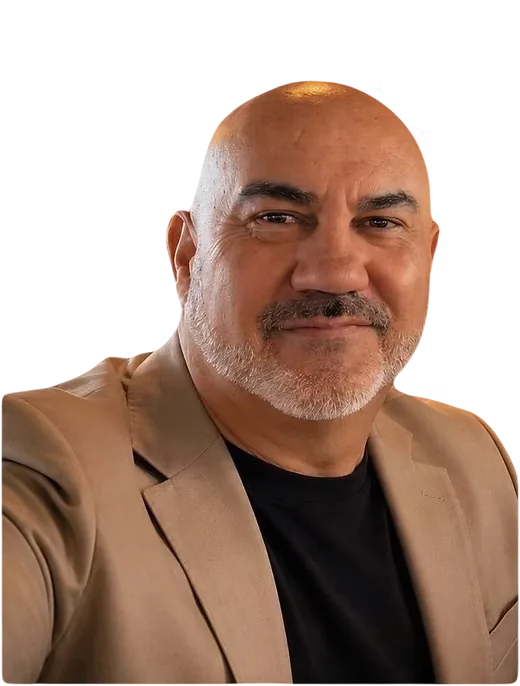

H

Harold Van Eeden
Managing Partner | Strategist and expert in commercial payments
Harold Van Eeden is a seasoned payments industry executive with over 25 years of experience driving growth, innovation and transformation across global and emerging markets.
Prior to TransactIQ, Harold held senior leadership roles at Visa, including Senior Director, CEMEA B2B Solutions and Director, Sub-Saharan Africa Commercial Business. In these roles, he led strategic initiatives to expand commercial and B2B payment capabilities, strengthen partnerships and accelerate the adoption of modern payment solutions across diverse markets.
Harold is recognised for his ability to translate complex challenges into scalable, high-impact solutions.